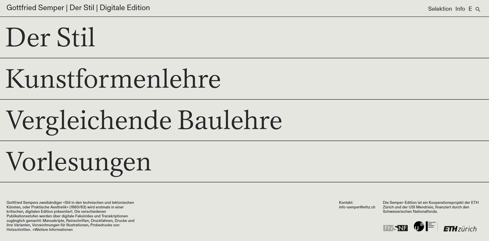
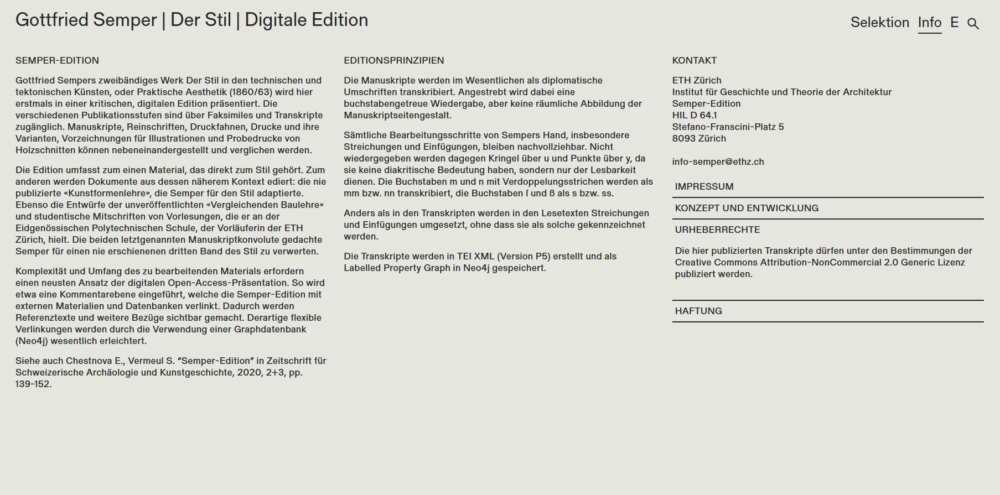
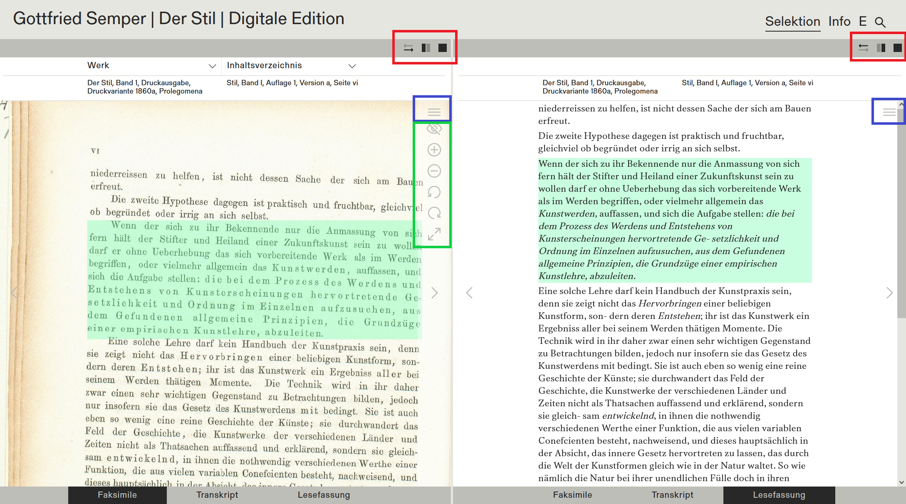
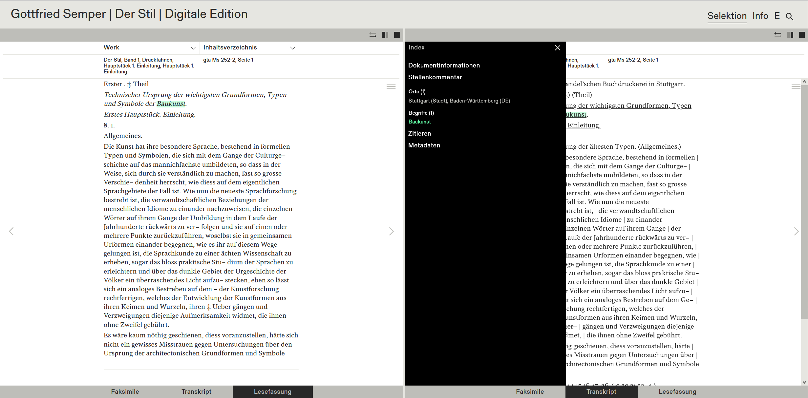
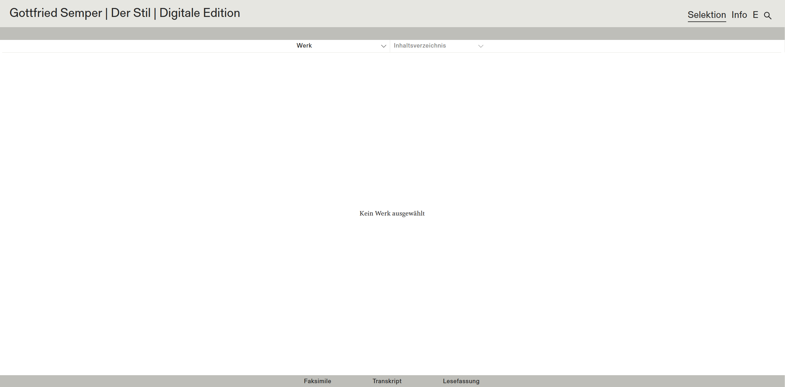
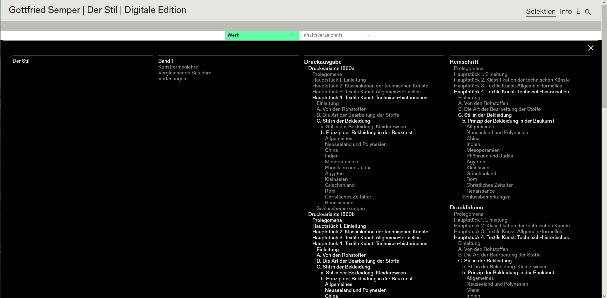
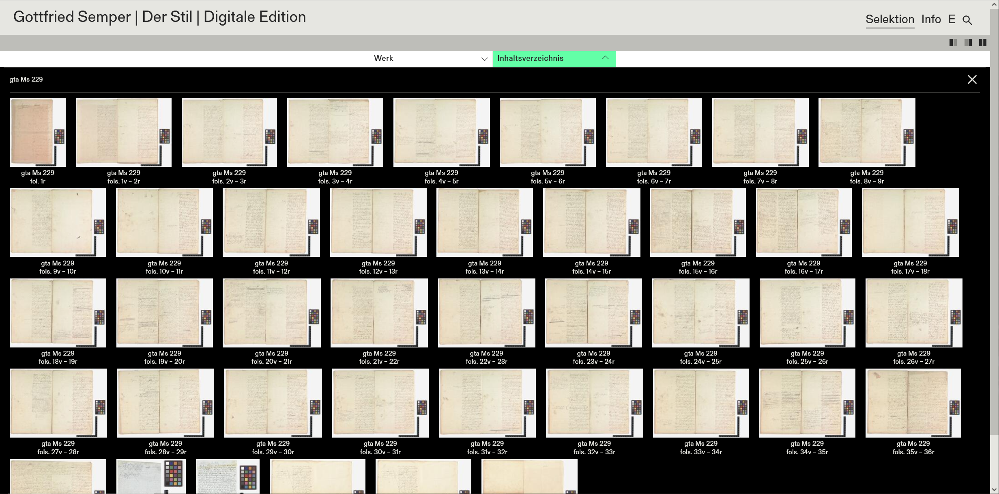
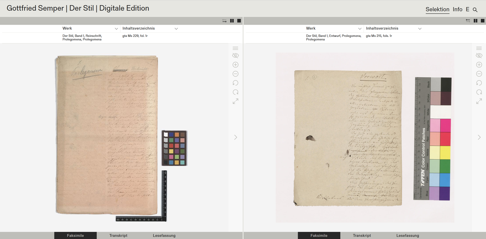
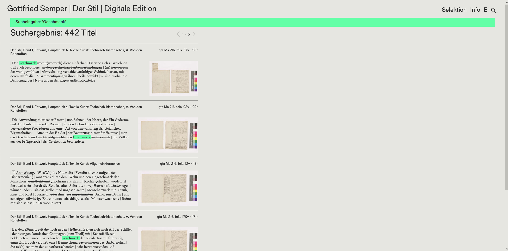

Gottfried Semper: Der Stil – Eine Edition im Aufbau
Table of Contents
Abstract
This review describes the Semper-Edition in its current version of March 2024, when work on the edition is at its midpoint of a projected 12-year processing time. Nevertheless, it seems suitable to review this resource at this point as it gives valuable insight into what constitutes good usability when going online at an early production stage. The edition encompasses Gottfried Sempers (1803–1879) opus magnum Der Stil in den technischen und tektonischen Künsten, oder Praktische Aesthetik (1860/1863), including draft versions, fair copies, proof stages, and complementing these texts with additional manuscripts closely linked to Der Stil, namely Vergleichende Baulehre, Kunstformenlehre and student notes on Semper’s lectures. The edition does not create one ‘Leittext’ (scholarly curated text) but aims at making the comprehensive content within these texts accessible and usable for different courses of analysis, achieving this by using a labelled property graph data base.
Vorbemerkung

Gegenstand und Inhalt der Edition
Gegenstand der Edition
Die Schriften des deutschen Architekten, Reformers und Kunsttheoretikers Gottfried Semper (1803–1879) gelten als zentrale Beiträge zu den seinerzeit engagiert verhandelten Fragen von Stil und Form in Architektur, Kunst und Kunstgewerbe (Karge 2014, 7). Den konzentrierten Ausdruck fanden Sempers Gedanken in seinem Hauptwerk Der Stil in den technischen und tektonischen Künsten, oder Praktische Aesthetik. Ein Handbuch für Techniker, Künstler und Kunstfreunde, das 1860/1863 in zwei Bänden erschien – Band 1 zur textilen Kunst, Band 2 bezogen auf „Keramik, Tektonik, Stereometrie, Metallotechnik“.2 Ein geplanter dritter Band sollte sich explizit der Architektur widmen, wurde jedoch nie fertiggestellt.3
Sempers Opus Magnum entstand in einer Phase des Umbruchs, sowohl die allgemeine Stilentwicklung betreffend als auch Sempers eigenes Leben. Nach Studienreisen durch Europas Süden hatte er sich in Dresden erfolgreich etabliert – als Architekt (u. a. Hoftheater 1838–41, Gemäldegalerie 1847–54) und Professor für Baukunst an der Akademie der Bildenden Künste. Als Folge seiner Teilnahme an der 1849er-Revolution war Semper 1850 zum Exil gezwungen und verbrachte mehrere Jahre in London, wo er die Auswirkungen der Industrialisierung auf Alltags- und Produktionsbedingungen beobachtete. Die erste Weltausstellung 1851 in London, die er als Organisator einiger Länderpavillons aktiv begleitete, löste maßgebliche Schritte der Kunstgewerbereform aus. Semper war einer deren Vorreiter und setzte sich – eben auch im Stil – intensiv mit der Geschichte des Kunsthandwerks auseinander (vgl. Karge 2014, 8). Nicht zuletzt waren seine kunsttheoretischen Überlegungen entscheidend geprägt von seiner praktischen Arbeit als Architekt und Lehrer, u. a. aus seiner Lehrtätigkeit am Londoner Department of Practical Art.4
Material und Vorarbeiten
Tatsächlich liegt Sempers Werk Der Stil in den technischen und tektonischen Künsten, oder Praktische Aesthetik bislang nicht als kommentierte Edition vor, seit den 1970er Jahren wurde der Text jedoch mehrfach nachgedruckt, teilweise mit wissenschaftlich einordnenden Vorworten.5 Inzwischen existieren auch mehrere Open Access-Digitalisate, u. a. bereitgestellt von den Universitätsbibliotheken der ETH Zürich und der Universität Heidelberg.6 Dies dürfte die Zugänglichkeit des Werkes in den letzten Jahrzehnten wesentlich verbessert haben.
Das Projekt „Semper-Edition“ beabsichtigt nun, „erstmals […] eine[…] kritische[…], digitale[…] Edition“7 des gesamten Textkonvoluts vorzunehmen. Zu den zwei Auflagen der publizierten Bände wird umfassend Material erschlossen: zur Verfügung stehende Vorstufen (Sempers Manuskripte, Reinschriften, Druckfahnen) und die Printausgaben, darunter drei verschiedene Druckvarianten der Erstauflage von Band 1. Die Editor:innen erweitern das Material zudem um Manuskripte Sempers, die eng mit der Genese des Werks verschränkt sind und zugleich eine Annäherung an den nie fertiggestellten 3. Band erlauben: Neben Vorarbeiten zu diesem das vor allem erst jüngst wieder aufgefundene druckfertige Manuskript zur Kunstformenlehre (1856) 8 und die Manuskripte zur Vergleichenden Baulehre (1849–1877). Ergänzt werden Sempers eigene Texte durch studentische Mitschriften zu seinen Vorlesungen an der Eidgenössischen polytechnische Schule (heute ETH) Zürich aus den späten 1850er bis in die 1860er Jahren. Schließlich ist geplant, auch die überlieferten Vorzeichnungen und Holzschnittprobedrucke zu den Illustrationen in den beiden Bänden bereitzustellen. Perspektivisch soll zudem von den Registereinträgen direkt auf entsprechende externe Ressourcen verlinkt werden.
Zu all diesen in der Edition verwendeten Werken und Textstufen gibt die Webseite jedoch nur knappe Auskunft in der Fußzeile der Startseite, der Info-Seite bzw. den Unterseiten der einzelnen Werke, eine umfassendes Quellen- bzw. Materialverzeichnis fehlt. Auf die Editionsgeschichte des Werks und weitere Vorarbeiten wird ebenfalls nicht direkt verwiesen, erst über eine Fußnote in dem auf der Webseite verlinkten Projektbericht von 2020 erhält man etwas mehr Information (vgl. Chestnova/Vermeul 2020, 150, Anm. 2). Tatsächlich liegen einzelne Werke / Werkteile bereits als wissenschaftliche Editionen in Printfassungen vor: Allen voran die umfassende Bearbeitung der Vergleichenden Baulehre durch Susanne Luttmann von 2008 sowie ein bereits 1981 von Wolfgang Herrmann veröffentlichter Entwurf für den Anfang zum III. Band des „Stil“.9 Darüber, ob diese Vorarbeiten in die Semper-Edition einfließen, geben allerdings weder Webseite noch der Projektbericht eine Auskunft.
Editorisches Konzept und Zielstellung

Projektinformation
Wie bereits angemerkt, erfährt man aktuell noch wenig über die der Edition zugrundeliegenden Texte und deren Auswahl. Auch die Person Gottfried Semper und seine Bedeutung für die Diskurse seiner Zeit werden nicht näher vorgestellt. Zur Projektorganisation liefert die Webseite ebenfalls nur knappe Informationen: Die Semper-Edition entsteht in Kooperation der Eidgenössischen Technischen Hochschule (ETH) Zürich und der Università della Svizzera italiana (USI) Mendrisio, finanziert wird das Projekt durch den Schweizer Nationalfonds (SNF). Die verantwortliche Projektleitung haben Philip Ursprung und Sonja Hildebrand inne, die operative Projektleitung liegt bei Michael Gnehm, die Co-Projektleitung für Digital Humanities bei Elena Chestnova, weitere Mitarbeiter:innen sind Raphael Germann, Tanja Kevic und Dieter Weidmann, als ehemalige Mitarbeiterin wird Carmen Aus der Au aufgeführt. Technische Unterstützung erhält das Projekt durch das DigiCenter der ETH Bibliothek (Digitalisierung) sowie die Scientific IT Services (SIS) der ETH (Programmierung von Backend und Frontend). Nicht vorhanden ist ein Zitiervorschlag für die Edition an sich, so ist auch nicht klar, was der „offizielle“ Titel des Projekts ist.11 Ebenso fehlt eine Angabe zum Erscheinungsverlauf, auch die Laufzeiten der Projektphasen sind nicht benannt.12 So wird auf der Webseite auch nicht ersichtlich, dass sich die Edition noch im Aufbau befindet.
Erschließung
Methode

Der veröffentlichte, transkribierte Text ist zumeist sauber, allerdings enthält die Lesefassung teilweise noch Worttrennungen, Korrekturzeichen u. a. (Abb. 3). Auch fielen im Zuge der Recherche zu diesem Text einige Transkriptions- und Tippfehler auf – da der Text aktuell nur mittels Volltextsuche durchsuchbar ist, wirken diese sich negativ auf die Findbarkeit aus.14 Ob es Kontrolldurchläufe zur Korrektur der Texte gibt, wird nicht beschrieben. Zur Erstellung der Lesefassung erfährt man, dass dafür alle Korrekturen und Streichungen übernommen werden.
Der Webseite zufolge werden die Transkripte in TEI-XML, Version P5, umgesetzt, näher wird das verwendete TEI-Schema nicht spezifiziert.15 Anschließend werden die XML-Daten in einen Labeled Property Graph16 überführt, hierfür kommt die Software Neo4j17 zum Einsatz. Mit dem Einsatz von Graphtechnik weichen die Editoren von der etablierten Praxis des TEI-XML-Standards für Digitale Editionen ab. Sie begründen das auf der Info-Seite mit der Komplexität der Referenzen und Verlinkungen in der Edition, diese „erfordern einen neusten Ansatz der digitalen Open-Access-Präsentation. So wird etwa eine Kommentarebene eingeführt, welche die Semper-Edition mit externen Materialien und Datenbanken verlinkt. Dadurch werden Referenztexte und weitere Bezüge sichtbar gemacht. Derartige flexible Verlinkungen werden durch die Verwendung einer Graphdatenbank (Neo4j) wesentlich erleichtert.“18 Zum Vorgang der Digitalisierung und Erstellung der Faksimiles, z. B. zum verwendeten Dateiformat, liegen keine näheren Informationen vor. Die Auflösung der Digitalisate scheint recht hoch, d. h. sie erlaubt eine starke Vergrößerung auf der Webseite. Da die Digitalisate nicht heruntergeladen werden können, kann keine weitere Aussage über deren Qualität getroffen werden.
Register / Stellenkommentar
Zur konkreten Ausgestaltung dieser oben benannten „Kommentarebene“ und den enthaltenen Kategorien erfährt man leider noch nichts auf der Webseite, auch gibt es kein für sich ausgewiesenes Register.19 Für jede Einzelseite kann aber bereits ein Index-Menü aufgerufen werden (s. u., „Seitenaufbau“), das einen Abschnitt „Stellenkommentar“ enthält. Dessen Einträge sind aktuell nicht zu externen Normvokabularien verlinkt, so ist auf der Webseite für den Nutzer nicht ersichtlich, ob und welche Normdaten verwendet werden.20 Inwieweit und in welcher Form über die bloße Identifizierung dieser Entitäten im Register eine Kommentierung und wissenschaftliche Einordnung stattfindet, wird nicht näher beschrieben. Damit fehlt ein entscheidender Teil der Edition: Die kritische Einordnung und Kontextualisierung des Werkinhalts, der in Bezug auf die inzwischen vorhandenen Open-Access-Digitalisate der Printausgabe ja auch erst den Mehrwert dieser Edition bringt. Es mag sein, dass der Arbeitsplan der Edition andere Arbeitsschritte vorangestellt hat. Doch bereits 1977 stellte der Kunsthistoriker Adrian von Buttlar in Bezug auf den Stil mit seinen zahlreichen Referenzen fest, dass „dessen historische Zuordnung und Bewertung bisweilen überwunden oder widerlegt ist“ (Buttlar 1977, 2). Sempers Werk ist tief in die zeitgenössischen – zum Teil mit heutigem Wissen klar problematischen – Diskurse des 19. Jahrhunderts eingebunden,21 es wäre daher gut gerade für Nutzer ohne entsprechendes Fachwissen zum Thema zumindest eine entsprechende Einführung in den Kontext und die geplante kritische Kommentierung auf der Webseite zu platzieren.
Präsentation und Funktionalität
Was wird bereitgestellt
Bereits als Transkription zu Verfügung steht ein größerer Teil der zu Band 1 gehörenden Textstufen: 1. Auflage der Printausgabe 1860 (Variante a), 2. Auflage 1878, Entwurf, Reinschrift, Druckfahnen. Mit Inhaltsverzeichnis angelegt, aber noch nicht hochgeladen sind die Textstufen der Printausgaben 1860b und 1860c. Noch gar nicht sichtbar sind Inhaltsverzeichnis und die Textstufen zum zweiten Band des Stil sowie den Vorarbeiten zum geplanten 3. Band. Für die Kunstformenlehre, Vergleichende Baulehre und die Vorlesungsmitschriften sind Startseiten mit Grundinformationen angelegt. Die edierten Texte werden jeweils als Faksimile, Transkripte und Lesefassung bereitgestellt. Bislang sind nur verkürzte bibliografische bzw. archivalische Angaben zu den einzelnen Printausgaben bzw. Manuskripten angegeben, hier wären wie bereits angemerkt vollständige Angaben nötig. Eine Erläuterung, woran die Unterscheidung der drei Varianten der ersten Auflage von 1860 festgemacht wird, fehlt ebenfalls. Alternative Ausgabeformen, wie PDF-Ausdruck oder E-Book, scheinen nicht geplant, wie überhaupt eine Druckfunktion für die Webseite der Edition aktuell nicht vorhanden ist. Eine Download-Funktion für die XML-Daten ist zum Zeitpunkt des Reviews ebenfalls nicht vorhanden.22 Grundsätzlich fehlen – bis auf die knappen Mouseover der Icons – Hilfetexte zur Orientierung innerhalb der editierten Texte sowie zur Funktionalität der Seite und der Suche. Die Info-Seite bietet wie beschrieben nur Grunddaten zur Edition (verwendetes Material, Editionsprinzipien, Umsetzung), allgemeinen Kontaktdaten, Informationen zu den beteiligten Institutionen und Personen sowie eine Angabe zur Nutzungslizenz für die Transkripte. Der verlinkte Projektbericht (Chestnova/Vermeul 2020) ist nur bedingt hilfreich für die Benutzerführung, gibt zudem einen inzwischen älteren Stand wieder.
Seitenaufbau
Die Präsentationsoberfläche der Edition ist minimalistisch gehalten, nur wenige Optionen stehen eingangs zur Verfügung. Visuell sind eigentliche Edition und Begleitinformationen sehr gut voneinander getrennt: Die Startseite (siehe Abb. 1) beginnt mit der Kopfzeile mit Editionstitel „Gottfried Semper | Der Stil | Digitale Edition“ und den Menüpunkten „Selektion“ für direkten Einstieg in die Edition, „Info“ für die bereits benannte Info-Seite, „E“ für Umstellung auf englischsprachige Menüführung sowie dem auf die Suchfunktion verweisenden Lupensymbol. Für diesen Abschnitt wird eine serifenlose Schrift verwendet. Der „Editionstitel“ dient zugleich als ‚Home Button‘ und führt immer wieder zurück zur Startseite. Unterhalb der Kopfzeile sind die Zugänge zu den vier großen Hauptabschnitten (= Werken) der Edition platziert, diese heben sich durch eine deutlich größere Schrift in Serifen von der Kopfzeile ab: „Der Stil“, „Kunstformenlehre“, „Vergleichende Baulehre“ und „Vorlesungen“. Ein Klick auf diese öffnet den Hauptabschnitt und führt direkt in das jeweilige Werk hinein. Dessen Unterstartseiten enthalten – wie erwähnt – einen kurzen Einführungstext in das betreffende Werk sowie ein Inhaltsverzeichnis mittels dessen die einzelnen Kapitel aufgerufen werden können. Eine Fußzeile, in gleicher serifenloser Schrift wie die Kopfzeile, schließt die Startseite unten ab. Sie enthält links den ersten Abschnitt der kurzen Projektvorstellung von der Info-Seite, die Verlinkung zu „Weiteren Informationen“ führt dann zu eben dieser. Rechts findet sich eine E-Mail-Kontaktadresse, sowie die Logos der beteiligten Institutionen und des Fördermittelgebers, jeweils mit einer Verlinkung zu deren Webseiten.
Die eigentliche Edition öffnet sich mit zwei parallelen Textfenstern unterhalb der Kopfzeile (Abb. 3). Innerhalb dieser gibt es nochmals kleine Kopfzeilen, die eine verkürzte Quellenangabe zur genaueren Orientierung bieten und über die Schaltflächen „Werk“ und „Inhaltsverzeichnis“ den Wechsel zu einer anderen Textseite ermöglichen. Unterhalb der Textfenster kann man zwischen drei Textdarstellungen wählen: Faksimile, Transkript und Lesefassung. Für alle drei kann ein Index-Menü aufgerufen werden, Pfeile rechts und links des Textes ermöglichen direktes Vor- und Zurückblättern der angezeigten Seite. Bei den Faksimiles erscheinen zudem Icons für Vergrößern, Verkleinern und Seite drehen. Mit dem Icon „durchgestrichenes Auge“ kann man die „Highlight“-Funktion (s. u.) abstellen, das Icon mit zwei diagonalen Pfeilen repräsentiert die Funktion „Vollbildschirm“. Letztere ist allerdings zum Zeitpunkt des Reviews nicht aktivierbar, was sich negativ auf die Nutzung der Faksimile auswirkt: Da die Editionskopfzeile stets einen Teil des Bildschirms beansprucht, muss man gerade bei kleinen Geräten häufiger Zoom- und Scrollfunktion nutzen, um Texte im Detail zu studieren.

Orientierung

 

Zur besseren Orientierung innerhalb einer Textseite sind in der Parallelansicht Transkription / Lesefassung und Faksimile absatzweise mittels Highlight verbunden (Abb. 3), jedoch nicht Transkription und Lesefassung untereinander. Ebenfalls durch Highlight verlinkt sind die Schlagworte aus dem Register mit den entsprechenden Textstellen in Transkript bzw. Lesefassung (Abb. 4).
Suche

FAIR
Findbarkeit (Findable): Gegenwärtig ist für die Edition als Ganzes kein Einsatz eines Persistent Identifiers ersichtlich, auch gibt es keine Anzeige einer Versionierung. Bei den Einzelseiten wird ein Zitiervorschlag mit einer automatisch generierten tagesaktuellen Datumsangabe generiert. Da aber die Versionierung in Form der Datumsangabe nicht Bestandteil des Links ist, scheint kein persistentes Wiederaufrufen spezifischer Versionen möglich. Inwieweit die Edition selbst später mit umfangreichen Metadaten beschrieben wird, lässt sich aktuell noch nicht sagen. Zur Verzeichnung der Edition in Nachweissystemen kann festgehalten werden, dass sie sowohl in den Katalogen von Greta Franzini25 und Patrick Sahle26 erfasst als auch sehr gut mit gängigen Suchmaschinen zu finden ist. Eine Aufnahme in Bibliothekskatalogen fehlt bisher, selbst die Bibliotheken der herausgebenden Institutionen haben die Edition nicht verzeichnet. Sehr gut findbar ist der Projektbericht von Chestnova/Vermeul 2020, dieser enthält allerdings keinen direkten Link zur Online-Ressource. Das Projekt scheint nicht die sozialen Medien zu nutzen.
Zugänglichkeit (Accessible): Die Präsentationsschicht ist mit den oben beschriebenen Inhalten für jeden frei aufrufbar, die Daten selbst (eingeschlossen Faksimiles) sind hingegen nicht offen verfügbar, Nutzer erhalten keine Information über mögliche alternative Zugangswege.27 Selbst eine einfache Druckfunktion für Einzelseiten fehlt. Eine eingeschränkte Zugänglichkeit steht zwar nicht im Widerspruch mit dem Accessible-Prinzip, welches nur vorsieht, dass in einem solchen Fall ein Weg zur Kontaktaufnahme zum Erhalt der Daten offen kommuniziert wird. Eine entsprechende „info“-E-Mail-Adresse sowie Namen von Ansprechpartnern sind auf der Webseite auch vorhanden. Zugangsbeschränkungen sollen aber gut begründet werden, z. B. durch rechtliche Anforderungen. Die Entscheidung, die Datennachnutzung eher restriktiv zu behandeln, mag auch ihre Ursache in der ursprünglich hybrid geplanten Publikationsform haben,28 inzwischen entsteht die Semper-Edition jedoch rein digital, so dass entweder die fortgesetzte Nutzungseinschränkung erklärt werden oder mit Hinweis auf den Arbeitsstand des Editionsprojekt eine Aussicht auf kommende Datenzugangsmöglichkeiten erfolgen sollte.
Beim Aspekt der Zugänglichkeit fragen die RIDE-Review-Kriterien explizit auch nach Web Accessibility und Barrierefreit. Im Rahmen dieses Review wurde die Barrierearmut der Edition nicht eingehend getestet, allerdings hat sich bereits beim Versuch alle Elemente der Edition mittels Tastatur anzusteuern gezeigt, dass dies zwar für Kopf- und Fußzeilenelemente möglich ist, nicht jedoch für die Unterbereiche der Info-Seite (Impressum u. a.). Der eigentliche Editionsbereich kann gar nicht erreicht werden. Dadurch wird aktuell auch der Zugang zu den – in Sinne der Barrierearmut positiv zu bewertenden Lesefassungen – erschwert. Die Menüführung kann auf Englisch umgestellt werden. Das responsive Design funktioniert auf einem Tablet in Querformat, bei Hochformat oder Mobiltelefon passt sich die Edition nicht an den schmalen Bildschirm an.
Interoperabilität (Interoperable): Zum aktuellen Zeitpunkt ist noch keine Interoperabilität, d. h. Nachnutzbarkeit als Download oder für Verlinkungen, der auf der Webseite angezeigten Daten gegeben. Es gibt dort auch keine Information über geplante Zugangswege oder die verwendeten Normvokabulare. Mit TEI XML (Version 5) verwendet die Edition das gängige für Nachnutzung geeignete Standardformat der Fachcommunity. Der Einsatz der Graphtechnik bei dieser Edition ist u. a. begründet mit der Komplexität der Korrekturschichten und Referenzierungen innerhalb der Texte, den Editor:innen ist der neuartige, experimentelle Charakter dieses Projektteils auch bewusst (Chestnova/Vermeul 2020, 148 f.). In Bezug auf Interoperabilität und Standardisierbarkeit muss sich die Graphtechnik noch bewähren, es gibt aber bereits verwandte Projekte, die mit der Methode „Text als Graph“ arbeiten, wie das an der Akademie der Wissenschaften und der Literatur | Mainz und der Johannes a Lasco Bibliothek Emden angesiedelte Projekt „Die sozinianischen Briefwechsel“.29
Nachnutzbarkeit (Reusable): Eine umfängliche Dokumentation der Datenerstellung und -verarbeitung wurde bislang nicht veröffentlicht. Zwar können grundlegenden Ansätze und Annahmen des editorischen Konzepts sowie die (geplante) Umsetzung Chestnova/Vermeul 2020 entnommen werden, dies ersetzt jedoch nicht vollständige Transkriptions- und Editionsrichtlinien. Ebenso fehlen detaillierte bibliographische Angaben bzw. Provenienzdaten zur Herkunft der einzelnen Texte / Manuskripte. Für die auf der Webseite publizierten Transkripte wird die „Creative Commons Attribution-NonCommercial 2.0 Generic Lizenz“ benannt (siehe Abb. 2). D. h. die freie Verwendung der Transkripte ist zwar erlaubt, aber nur zu nicht-kommerziellen Zwecken. Hierzu ist anzumerken, dass formal die gewählte Lizenz nicht nur benannt, sondern auch mit ihrem Gesetzestext verlinkt sein sollte, dies fehlt hier. Die gewählte NC-Lizenz schränkt zudem eine mögliche weitreichende Verbreitung ein, wie der Jurist Paul Klimpel ausführt: „Gerade Inhalte, die im Rahmen von öffentlichen Bildungsinitiativen geschaffen wurden, sollten jeden Verbreitungsweg nutzen, der ihnen offensteht, da die möglichst weite Verbreitung von Inhalten im Vordergrund steht.“ (Klimpel 2012, 20) Mit der Wahl dieses Bausteins kann es passieren, dass auch Nutzer:innenkreise ausgeschlossen werden, die sehr wahrscheinlich gar nicht mitgemeint sind, wie z. B. nicht-öffentliche Bildungs- und Weiterbildungseinrichtungen (vgl. Klimpel 2012, 17). Für die übrigen Elemente der Edition, Faksimile, Lesefassung, Register, wird gar keine Lizenz für die Nachnutzbarkeit benannt. Nutzer:innen bleiben somit im Unklaren darüber, was mit diesen Inhalten der Edition machbar ist.
Fazit
Dieses Review beschreibt eine digitale Edition, die sich noch im Aufbau befindet. Es soll daher nicht negativ bewertet werden, dass es in einzelnen Bereichen noch zu Fehlfunktionen kommt oder dass Teile der Edition bzw. Datenzugänge noch fehlen. Kritisch hervorzuheben ist jedoch, dass die Editor:innen auf der Editionswebseite zu wenig Information bereitstellen: sowohl die Dokumentation zur Editions (Editions-, Transkriptionsregeln, Grundlagen der Graphdatenbank) und deren Arbeitsstand als auch zum Gegenstand der Edition und zur Benutzung der Editionswebseite. Nutzer:innern ohne spezifische Fachkenntnisse zu Semper und dem Entstehungskontexts von Der Stil in den technischen und tektonischen Künsten benötigen ausführlichere Kontextinformation, gerade auch zu den aus heutiger Sicht problematischen Werkinhalten. Dazu können neben vollständigen bibliographischen und archivalischen Angaben der editierten Publikationen und Manuskripte auch eine Bibliografie zu relevanten bereits vorhandenen Ausgaben des Stil und der zentralen Sekundärliteratur gehören. Direkt auf der Webseite sollte der Nutzer außerdem nötige Informationen für eine gute Orientierung auf der Seite erhalten: Welche Ansichten (Parallel, Vergleich, Einzel) gibt es, wie steuert man diese an? Wie funktioniert die Suche, was funktioniert noch nicht? Was verbirgt sich hinter den Index-Kategorien „Metadaten“ und „Dokumentinformation“? Warum ist (aktuell) kein direkter Datenzugang möglich, über welche Wege kann man Zugang erhalten? Mögliche Irritationen der Nutzer zu Funktionseinschränkungen, die durch den kontinuierlichen Weiterbau der Edition bedingt sind, könnten durch einen „Work-in-Progress“-Hinweis aufgefangen werden.
Zum Editionsvorhaben an sich kann festgehalten werden, dass die Auswahl der Werke und Textstufen schlüssig ist und sich durch den engen inhaltlichen Zusammenhang mit dem Stil, dem zentralen Text der Edition, begründet. Bis auf die beiden noch zu Sempers Lebzeiten publizierten Auflagen der ersten zwei Bände liegen die hier zu edierenden Manuskripte bisher noch nicht in einer digitalisierten Form vor. Unter den Projektmitarbeiter:innen sind ausgewiesene Semper-Expert:innen, wie Michael Gnehm, Sonja Hildebrand und Elena Chestnova, die mehrfach zu Sempers Werk publiziert haben. Das Archiv der ETH Zürich, eine der beteiligten Institutionen, verwaltet den Nachlass Sempers, in dem ein großer Teil der für diese Edition relevanten Manuskripte aufbewahrt wird. Die Edition weist relevante Aspekte einer digitalen wissenschaftlichen Edition auf: Die Umsetzung verfolgt mit dem Einsatz der Graphtechnik ein klares digitales Paradigma, die Editor:innen sind sich durchaus bewusst, dass es sich dabei um einen neuen, noch wenig standardisierten Ansatz handelt (vgl. Chestnova/Vermeul 2020, 143). Wie gut die Umsetzung gelingt, wird sich erst nach Fertigstellung der Edition bewerten lassen. Dabei wird vor allem die noch auszubauende Kommentarebene mit kritischer Kontextualisierung und den geplanten Verlinkungen in den größeren Bezugsrahmen um das Werk relevant sein.
Die Semper-Edition wird zuerst Kunst- und Architekturhistoriker ansprechen und einen wichtigen Beitrag zur Forschung zum 19. Jahrhundert leisten können. Darüber hinaus dürfte gerade die Kommentarebene helfen, dieses wertvolle Quellenmaterial auch für andere Fächer und deren Forschungen zum 19. Jahrhundert aufzuschließen.
Bibliography
- Buttlar, Adrian von. 1977. „Gottfried Semper als Theoretiker.“ In: Gottfried Semper: Der Stil in den technischen und tektonischen Künsten oder Praktische Ästhetik. Band 1: Die textile Kunst, edited by Friedrich Piel, 1–22. Mittenwald: Mäander-Kunstverlag (Kunstwissenschaftliche Studientexte 3). DOI: 10.11588/artdok.00007848.
- Chestnova, Elena und Swen Vermeul. 2020. “Semper-Edition.” Zeitschrift für schweizerische Archäologie und Kunstgeschichte, 77 (2-3): 139–52. DOI: 10.5169/SEALS-882471.
- Chestnova, Elena. 2021. “Modelling Manuscripts: the example of the Semper Edition. Digital Images, Metadata and Cultural Heritage Objects (DHCH21)” (DHCH21), Rom. DOI: 10.5281/zenodo.7650435.
- Dumont, Stefan. 2019. “Briefe kommentieren im Semantic Web“. https://publications.goettingen-research-online.de/handle/2/108288.
- Herrmann, Wolfgang. 1978. Gottfried Semper im Exil. Paris, London 1849–1855. Basel, Stuttgart: Birkhäuser.
- Herrmann, Wolfgang. 1981. Gottfried Semper: Theoretischer Nachlass an der ETH Zürich. Katalog und Kommentare. Basel, Stuttgart: Birkhäuser.
- Karge, Henrik (Editor). 2008. Gesammelte Schriften. Band 2 + 3. Nachdruck der Ausgabe Frankfurt a.M. 1860/1863. Hildesheim, Zürich, New York: Olms-Weidman.
- Karge, Henrik. 2014. „Einleitung des Herausgebers.“ In: Gottfried Semper. Gesammelte Schriften, Band 1: Wissenschaftliche Abhandlungen und Streitschriften, hg. von Henrik Karge, 7–59. Hildesheim/Zürich/New York: Olms-Weidmann.
- Klimpel, Paul. 2012. Freies Wissen dank Creative-Commons-Lizenzen Folgen, Risiken und Nebenwirkungen der Bedingung „nicht-kommerziell – NC“, hg. von Wikimedia Deutschland, iRights.info, CC DE. Berlin. https://web.archive.org/web/20240221101240/https://irights.info/wp-content/uploads/userfiles/CC-NC_Leitfaden_web.pdf.
- Luttmann, Susanne. 2008. Gottfried Sempers „Vergleichende Baulehre“. Eine quellenkritische Rekonstruktion. Dissertation. ETH Zürich.
- Mallgrave, Harry Francis. 2001. Gottfried Semper: Ein Architekt des 19. Jahrhunderts. Zürich: gta-Verl.
- Semper, Gottfried. 1860A. Der Stil in den technischen und tektonischen Künsten, oder Praktische Aesthetik. Ein Handbuch für Techniker, Künstler und Kunstfreunde, Band 1: Die Textile Kunst für sich betrachtet und in Beziehung zur Baukunst. Frankfurt am Main: Verlag für Kunst und Wissenschaft (2. Auflage: 1878, München: Friedrich Bruckmann’s Verlag).
- Semper, Gottfried. 1860B. Die textile Kunst für sich betrachtet und in Beziehung zur Baukunst. Bd. 1. Der Stil in den technischen und tektonischen Künsten oder praktische Ästhetik. Frankfurt a. M.: Verl. für Kunst und Wissenschaft. DOI: 10.11588/diglit.67642.
- Semper, Gottfried. 1863A. Der Stil in den technischen und tektonischen Künsten, oder Praktische Aesthetik. Ein Handbuch für Techniker, Künstler und Kunstfreunde, Band 2: Keramik, Tektonik, Stereometrie, Metallotechnik für sich betrachtet und in Beziehung zur Baukunst, München: Friedrich Bruckmann’s (2. Auflage: 1879, München: Friedrich Bruckmann’s Verlag).
- Semper, Gottfried. 1863B. Keramik, Tektonik, Stereotomie, Metallotechnik für sich betrachtet und in Beziehung zur Baukunst. Bd. 2. Der Stil in den technischen und tektonischen Künsten oder praktische Ästhetik. München: Bruckmann. DOI: 10.11588/diglit.1300.
- Semper, Gottfried. 1860-1863. Der Stil in den technischen und tektonischen Künsten, oder Praktische Aesthetik: ein Handbuch für Techniker, Künstler und Kunstfreunde. Frankfurt a. M.: Verlag für Kunst und Wissenschaft. ETH-Bibliothek Zürich, Rar 6712. DOI: 10.3931/e-rara-14129.
- Semper, Gottfried. 1878-1879. Der Stil in den technischen und tektonischen Künsten, oder Praktische Aesthetik: ein Handbuch für Techniker, Künstler und Kunstfreunde. München: Bruckmann. ETH-Bibliothek Zürich, A 4714. DOI: 10.3931/e-rara-14130.
- Semper, Gottfried. 1878. Die textile Kunst für sich betrachtet und in Beziehung zur Baukunst. 2. Aufl. Bd. 1. Band. Der Stil in den technischen und tektonischen Künsten oder praktische Ästhetik. München: Friedr. Bruckmann’s Verlag. DOI: 10.11588/diglit.66814.
- Semper, Gottfried. 1879. Keramik, Tektonik, Stereotomie, Metallotechnik für sich betrachtet und in Beziehung zur Baukunst. 2. Aufl. Bd. 2. Band. Der Stil in den technischen und tektonischen Künsten oder praktische Ästhetik. München: Friedr. Bruckmann’s Verlag. DOI: 10.11588/diglit.66815.
- Semper, Gottfried. 1977. Der Stil in den technischen und tektonischen Künsten oder praktische Ästhetik. 2 Bände, Nachdruck der Ausgabe Frankfurt a.M. 1860/1863. Mittenwald: Mäander-Kunstverlag.
- Semper, Gottfried. 2017. Der Stil in den technischen und tektonischen Künsten. Praktische Ästhetik – ein Handbuch für Techniker, Künstler und Kunstfreunde. Nachdruck der Ausgabe von 1860. Norderstedt: Hansebooks GmbH.
Notes
- Die vorliegende Publikation wurde im Rahmen des Konsortiums Text+ im Kontext der Arbeit des Vereins Nationale Forschungsdateninfrastruktur (NFDI) e.V. verfasst. NFDI wird von der Bundesrepublik Deutschland und den 16 Bundesländern finanziert, und das Konsortium Text+ wird gefördert durch die Deutsche Forschungsgemeinschaft (DFG) - Projektnummer 460033370. Die Autor:innen bedanken sich für die Förderung sowie Unterstützung. Ein Dank geht außerdem an alle Einrichtungen und Akteur:innen, die sich für den Verein und dessen Ziele engagieren. ↑
- Gottfried Semper: Der Stil in den technischen und tektonischen Künsten, oder Praktische Aesthetik. Ein Handbuch für Techniker, Künstler und Kunstfreunde, Band 1: Die Textile Kunst für sich betrachtet und in Beziehung zur Baukunst, Frankfurt am Main: Verlag für Kunst und Wissenschaft, 1860; Band 2: Keramik, Tektonik, Stereometrie, Metallotechnik für sich betrachtet und in Beziehung zur Baukunst, München: Friedrich Bruckmann’s Verlag, 1863. Die zweite Auflage erschien 1878/79 und wurde ebenfalls von Friedrich Bruckmann’s Verlag in München herausgegeben. ↑
- Vgl. zur komplexen Editionsgeschichte des Stils Luttmann 2008, Mallgrave 2001, S. 285–295, 318–325 sowie Herrmann 1978, S. 95–124 („Zur Entstehung des ‚Stil‘ 1840–1877“). ↑
- Das „Department of Practical Art“, ab 1853 „Science and Art Department” und angegliedert an das 1852 in London eröffnete South Kensington Museum (heute V&A), war die zentrale Bildungsstätte für kunstgewerbliche Ausbildung in Großbritannien und ein wichtiger Impulsgeber für die folgenden Veränderungen kunstgewerblicher Ausbildung auf internationaler Ebene. ↑
- Vgl. Semper, Gottfried. 1977. Der Stil in den technischen und tektonischen Künsten oder praktische Ästhetik. Nachdruck der Ausgabe Frankfurt a.M. 1860/1863. Mittenwald: Mäander-Kunstverlag; Karge, Henrik (Editor). 2008. Gesammelte Schriften. Band 2 + 3. Nachdruck der Ausgabe Frankfurt a.M. 1860/1863. Hildesheim, Zürich, New York: Olms-Weidman. Parallel werden Nachdrucke als Print on Demand / kostenpflichtiges E-Book angeboten, z. Bsp. Gottfried Semper. 2017. Der Stil in den technischen und tektonischen Künsten. Praktische Ästhetik – ein Handbuch für Techniker, Künstler und Kunstfreunde, Nachdruck der Ausgabe von 1860, Norderstedt: Hansebooks GmbH. ↑
- ETH-Bibliothek Zürich: 1. Auflage: https://doi.org/10.3931/e-rara-14129, 2. Auflage: https://doi.org/10.3931/e-rara-14130; Universitätsbibliothek Heidelberg: 1. Auflage: https://doi.org/10.11588/diglit.2102, 2. Auflage: https://doi.org/10.11588/diglit.66813. ↑
- https://web.archive.org/web/20230724080451/https://www.semper-edition.ch/info. ↑
- Wiederentdeckt von Susanne Luttmann im Rahmen ihrer Dissertations-Recherchen, vgl. Luttmann 2008, 153 f. ↑
- Vgl. Luttmann 2008, einzelne Manuskripte der „Vergleichenden Baulehre“ bereits bei Herrmann 1981, S. 180–216 (Vorwort, Einleitung, 10. Kapitel, Neue Einleitung); bei Herrmann auch der Entwurf zum Anfang eines 3. Bandes, vgl. ebd. S. 250–260. ↑
- Vgl. zur Forderung nach stärkerem Fokus auf Inhaltserschließung für werkübergreifende Vernetzung, Dumont 2019, 19. ↑
- Die Webseite trägt den Titel: „Gottfried Semper | Der Stil | Digitale Edition“; Chestnova/Vermeul 2020 verwenden den Kurztitel „Semper-Edition“. Der Projekttitel zur Projektbeschreibung auf der gta-Webseite lautet „Gottfried Semper: Der Stil. Digitale Edition“ (https://web.archive.org/web/20240221095048/https://www.gta.arch.ethz.ch/forschungsprojekte/gottfried-semper-der-stil-digitale-edition/informationen); auf der Webseite des Förderers ist das Projekt benannt: „Gottfried Semper: Der Stil. Kritische und kommentierte Ausgabe“ (https://web.archive.org/web/20240221095553/https://data.snf.ch/grants/grant/157995; https://web.archive.org/web/20221130144243/https://data.snf.ch/grants/grant/198242). Der automatisch generierte Zitiervorschlag für die Einzelseiten der Edition verwendet „Semper-Edition“ als Titel. ↑
- Laut Projektbeschreibung auf der Webseite des Förderers (https://data.snf.ch/grants/grant/198242, s. vorherige Anm.) sind die (geplanten) Laufzeiten 2017–2020, 2021–2024, 2025–2028. ↑
- Vgl. z. B. Gottfried Semper, Der Stil, Band 1, Druckausgabe, Druckvariante 1860A, Stil, Band I, Auflage 1, Version a, Seite vi, ed. Semper-Edition, Zürich, 2020. https://www.semper-edition.ch/selection/transcript/semper/stil_1_print/pages/Stil_Bd.1_Aufl_I_1860a_sVI.xml, 2024-02-21. Die Einzelseiten der Edition konnten bei mehreren Versuchen nicht in vollem Umfang mit der Wayback-Machine archiviert werden, daher werden hier die von der Edition vorgegebenen Zitierlinks benutzt. ↑
- So zum Beispiel fehlen hier in der Transkription in der Aufzählung Leerzeichen zwischen „DasGespinnst“, „DerKnote[sic!]“, „DerStich“, nach „Knote“ fehlt zudem die Klammer „(das Netzwerk)“, siehe: Gottfried Semper, Der Stil, Band 1, Reinschrift, Hauptstück 4. Textile Kunst: Technisch-historisches, gta Ms 230, fols. 139v – 140r, ed. Semper-Edition, Zürich, 2020. https://www.semper-edition.ch/selection/facsimile/semper/stil_1_rein/pages/20_Ms_230_140.xml, 2024-02-21. ↑
- Der Workflow zur Transkript-Erstellung ausführlicher in Chestnova/Vermeul 2020, 142–143 (es werden sowohl Optical-Character-Recognition (OCR) als auch Handwritten-Text-Recognition (HTR) sowie die Tools Transkribus (https://web.archive.org/web/20240419144040/https://www.transkribus.org/) und Oxygen XML editor (https://web.archive.org/web/20240419143916/https://www.oxygenxml.com/) eingesetzt). ↑
- Labeled Property Graph (LPG) gehört (wie auch Resource Description Framework [RDF]) zu den Graphdatenbanken. Diese fokussieren auf die Bezüge zwischen den Daten: Entitäten werden als Knoten dargestellt, die Bezüge zwischen diesen als Kanten. Sie sind damit flexibler als relationale Datenbanken, die die Daten zuerst in Tabellen erfassen und diese dann miteinander verlinken. In einem LPG können zudem – anders als in RDF - sowohl Knoten als auch Kanten mit spezifischen Eigenschaften ausgezeichnet werden, so dass sehr differenzierte Modellierungen von Bezügen zwischen den Daten und komplexe Suchabfragen in der Datenbank möglich sind. ↑
- https://web.archive.org/web/20240419144055/https://neo4j.com/. ↑
- Siehe Anm. 6. Mehr zum Einsatz der Graphdatenbank und zur Begründung deren Verwendung bei Chestnova/Vermeul 2020, 142–146. Zwei Aspekte sind wohl ausschlaggebend: die Eignung eines Labelled Property Graphs für komplexe Suchanfragen, und die Tatsache, dass das TEI-XML an Grenzen kommt, wenn in den Texten sich überlappende Eigenschaften ausgezeichnet werden müssen, die nicht in die strikt-hierarchischen Struktur von TEI-XML passen. ↑
- Chestnova/Vermeul zufolge werden im Register erfasst: Personen, Orte, Literaturverweise, Organisationen, Völker, Werke / Artefakte und Konzepte, vgl. Chestnova/Vermeul 2020, 143. ↑
- Tatsächlich erarbeitet das Projekt ein eigenes Vokabular, den „Digital Semper Thesaurus“. Dieser entsteht auf Basis des SKOS-Schemas mit dem Open Source-Tool iQvoc (https://web.archive.org/web/20240419144557/https://iqvoc.net/), für eine bestmögliche Interoperabilität mit anderen Ressourcen werden als Normdaten GND und Getty AAT eingebunden (Chestnova 2021, ab min. 46). ↑
- Eine Herausforderung ist zum Beispiel der Umgang mit rassistischen Begriffen in der Bezeichnung von Personen, z. B. „der N*** Wusswass“ (Gottfried Semper, Der Stil, Band 1, Entwurf, Hauptstück 4. Textile Kunst: Technisch-historisches, gta Ms 218, fols. 82v – 83r, ed. Semper-Edition, Zürich, 2020. https://www.semper-edition.ch/selection/facsimile/semper/stil_1_entwurf/pages/20_Ms_218_88.xml, 2024-03-28.) (An dieser Stelle sei auf eine unglücklicherweise unsaubere Erschließung hingewiesen: Der Text bezieht sich auf die Person mit Namen Wusswass, im Register verknüpft ist hingegen der nach dieser Person benannte Ort.) Wenn Semper wiederum in Bezug auf die chinesische Sprache schreibt, es zeige sich „mehr bonzenhafte Versimpelung als kindliche Ursprünglichkeit in dieser Einfalt“ (Gottfried Semper, Der Stil, Band 1, Druckausgabe, Druckvariante 1860A, Stil, Band I, Auflage 1, Version a, Seite 3, ed. Semper-Edition, Zürich, 2020. https://www.semper-edition.ch/selection/facsimile/semper/stil_1_print/pages/Stil_Bd.1_Aufl_I_1860a_s3.xml, 2024-02-21), ist historisches Kontextwissen nötig, um einordnen zu können, dass es sich schon damals bei „bonzenhaft“ um einen geringschätzenden Ausdruck handelte. („Bonze“, in: Wolfgang Pfeifer et al., Etymologisches Wörterbuch des Deutschen (1993), digitalisierte und von Wolfgang Pfeifer überarbeitete Version im Digitalen Wörterbuch der deutschen Sprache, http://web.archive.org/web/20240326142825/https://www.dwds.de/wb/etymwb/Bonze.). ↑
- Tatsächlich soll ein TEI-XML-Download Stand 2023 zukünftig möglich sein, siehe (http://web.archive.org/web/20240328155606/https://www.zde.uzh.ch/de/projects/semper.html). ↑
- Erläutert ist sie im Projektbericht von Chestnova/Vermeul 2020, 147–148. ↑
- Hier erfährt man auch, dass angedacht ist, die Funktionalität der Suche noch wesentlich auszubauen und zum Beispiel alle Erwähnungen archäologischer Artefakte im Umkreis eines Suchbegriffs zu markieren oder andere Konzeptbegriffe hervorzuheben (vgl. Chestnova/Vermeul 2020, 148). Im Zuge des Reviews führten Suchen mit Boolschen Modifiern bzw. wildcard-Funktionen (*) leider stets zu einer Fehlfunktion der Suche. ↑
- Catalogue of Digital Editions: Gottfried Semper. Critical and Commented Edition, DOI: http://hdl.handle.net/21.11115/0000-000F-EF07-D. ↑
- https://digitale-edition.de/e765. ↑
- Es ist Stand 2023 wohl bereits jetzt auf Anfrage die Bereitstellung von Graphdaten möglich, ein TEI-XML-Download ist für eine nächste Version der Edition geplant vgl. https://www.zde.uzh.ch/de/projects/semper.html (s. hier Anm. 21). ↑
- “[…] the decision to develop the Style Edition on a fully digital basis and to set aside the initial idea of a hybrid publication as had been proposed to the SNSF in the original funding proposal for the first phase.” (https://data.snf.ch/grants/grant/198242, siehe Anm. 10). ↑
- Siehe: „Zwischen Theologie, frühmoderner Naturwissenschaft und politischer Korrespondenz: Die sozinianischen Briefwechsel“, hrsg. von Kęstutis Daugirdas und Andreas Kuczera unter DH-Mitarbeit von Julian Jarosch, Sebastian Enns und Patrick Toschka; Projektwebseite: https://web.archive.org/web/20240221100358/https://sozinianer.mni.thm.de/home (unvollständig archiviert). ↑
@article{semper-edition,
author = {König, Sandra},
title = {Gottfried Semper: Der Stil – Eine Edition im Aufbau},
journal = {RIDE – A review journal for digital editions and resources},
number = {17},
year = {2024},
doi = {10.18716/ride.a.17.5},
url = {https://doi.org/10.18716/ride.a.17.5},
}TY - JOUR
AU - König, Sandra
TI - Gottfried Semper: Der Stil – Eine Edition im Aufbau
T2 - RIDE – A review journal for digital editions and resources
IS - 17
PY - 2024
DA - 2024/05
DO - 10.18716/ride.a.17.5
UR - https://doi.org/10.18716/ride.a.17.5
PB - Institut für Dokumentologie und Editorik e.V.
LA - de
ER - König, S. (2024). Gottfried Semper: Der Stil – Eine Edition im Aufbau. RIDE – A review journal for digital editions and resources, (17). https://doi.org/10.18716/ride.a.17.5König, Sandra. "Gottfried Semper: Der Stil – Eine Edition im Aufbau." RIDE – A review journal for digital editions and resources, no. 17, 2024. https://doi.org/10.18716/ride.a.17.5.König, Sandra. "Gottfried Semper: Der Stil – Eine Edition im Aufbau." RIDE – A review journal for digital editions and resources, no. 17 (2024). https://doi.org/10.18716/ride.a.17.5.